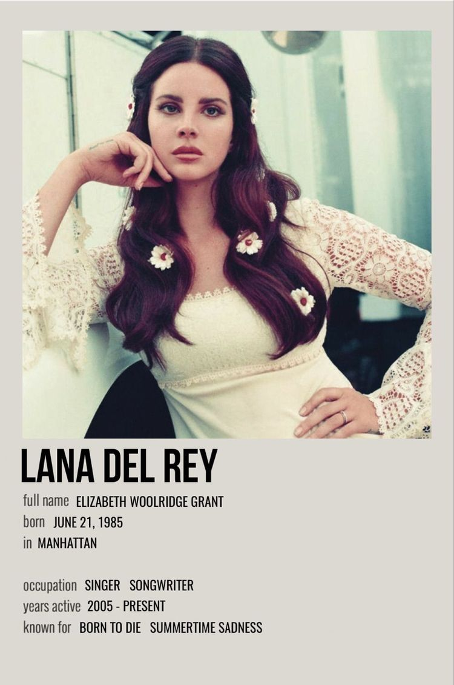
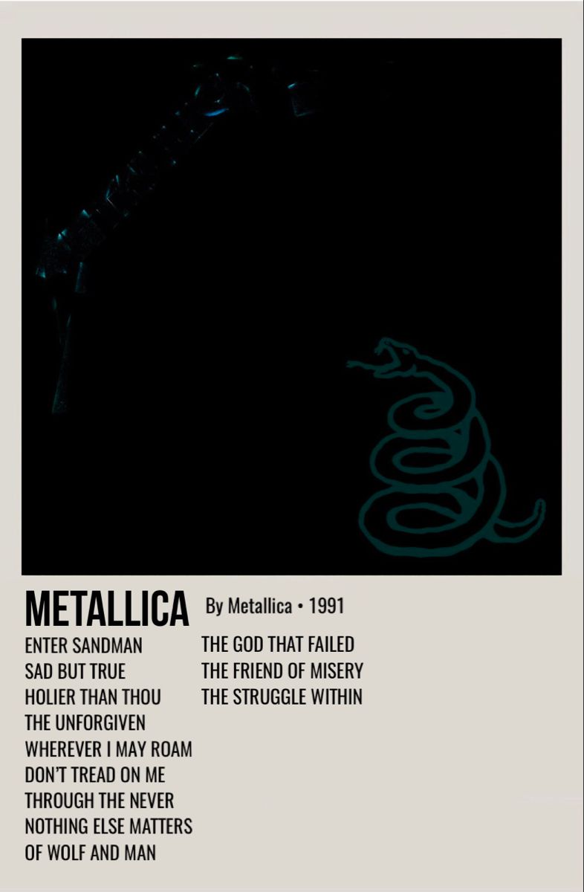

.jpeg)
Queen est un groupe de rock britannique, originaire de Londres, en Angleterre.
Il est formé en 1970 par Freddie Mercury, Brian May et Roger Taylor
L’année suivante, le bassiste John Deacon vient compléter la formation.
Maisons de disques : Elektra Records, Parlophone, PLUS
Origine : Londres, Royaume-Uni (1970)
Genre musical : Rock; Hard rock; Rock progressif; Glam rock; Opéra-rock Pop rock; Art rock
Instruments : piano, synthétiseur, guitare électrique, guitare acoustique
click ici pour lire le rest sur wikipidia

Michael Jackson [ˈmaɪkəl ˈdʒæksən], né le 29 août 1958 à Gary et mort le 25 juin 2009 à Los Angeles,
est un auteur-compositeur-interprète, danseur-chorégraphe et acteur américain.
Date/Lieu de naissance : 29 août 1958, Gary, Indiana, États-Unis
Date de décès : 25 juin 2009, Holmby Hills, Los Angeles, Californie, États-Unis
Enfants : Paris-Michael Katherine Jackson, Prince Michael Jackson II, Prince Michael Jackson I
Épouse : Debbie Rowe (m. 1996–2000), Lisa Marie Presley (m. 1994–1996)
Parents : Joseph Jackson, Katherine Jackson
click ici pour lire le rest sur wikipidia

Elizabeth Woolridge Grant, dite Lana Del Rey, est une auteure-compositrice-interprète américaine,
née le 21 juin 1985 à New York. Au début de sa carrière,
elle a utilisé d'autres pseudonymes : May Jailer, Sparkle Jump Rope Queen, Lana Del Ray et Lizzy Grant.
Date/Lieu de naissance : 21 juin 1985 (Âge: 37 ans), Manhattan, New York, État de New York, États-Unis
Genre musical : Rock; Hard rock; Rock progressif; Glam rock; Opéra-rock; Arena rock; Pop rock; Art rock
Instruments : piano, synthétiseur, guitare électrique, guitare acoustique, guitare basse et batterieb
click ici pour lire le rest sur wikipidia

Harry Edward Styles, né le 1ᵉʳ février 1994 à Redditch, Angleterre, est un chanteur,musicien et acteur britannique.
En 2010, il participe à l'émission de chant The X Factor et forme le boys band One Direction avec
Niall Horan, Louis Tomlinson, Liam Payne et Zayn Malik.
Date/Lieu de naissance : 1 février 1994 (Âge: 29 ans), Redditch, Royaume-Uni
Genre musical : Rock; Hard rock; Rock progressif; Glam rock; Opéra-rock; Arena rock; Pop rock; Art rock
Instruments : piano, synthétiseur, guitare électrique, guitare acoustique, guitare basse et batterie
click ici pour lire le rest sur wikipidia

Ariana Grande-Butera [ˌɑːriˈɑːnə ˈɡrɑːndeɪ], connue sous le nom Ariana Grande
en Floride, est une actrice, auteure-compositrice-interprète et productrice américaine.
Date/Lieu de naissance : 26 juin 1993 (Âge: 29 ans), Boca Raton, Floride, États-Unis
Époux : Dalton Gomez (m. 2021)
Maisons de disques : Mac Miller, Nicki Minaj, Big Sean, Pharrell Williams, Universal International
Frères et sœurs : Frankie Grande
Compagnons d'écriture : Selena Gomez, The Weeknd, PLUS
Parents : Joan Grande, Edward Butera
click ici pour lire le rest sur wikipidia

The Dark Side of the Moon est le huitième album studio du groupe britannique de rock progressif Pink Floyd,
sorti le 1ᵉʳ mars 1973 aux États-Unis et le 23 mars 1973 au Royaume-Uni chez Harvest Records.
click ici pour lire le rest sur wikipidia
Billie Eilish, née le 18 décembre 2001 à Los Angeles, est une auteur-compositeur-interprète-actrice américaine.
Son premier single, Ocean Eyes, sorti en mars 2016, rencontre un franc succès,
enregistrant près de 87 millions d'écoutes durant le mois de juillet 2016. Wikipédia
Date/Lieu de naissance : 18 décembre 2001 (Âge: 21 ans), Los Angeles, Californie, États-Unis
Parents : Maggie Baird, Patrick O' Connell
Nominations : Oscar de la meilleure chanson originale, PLUS
click ici pour lire le rest sur wikipidia

Slipknot est un groupe de nu metal américain, originaire de Des Moines, dans l'Iowa.
Il est formé par le percussionniste Shawn Crahan, le batteur Joey Jordison,
le bassiste Paul Gray et les guitaristes Kun Nong et Donnie Steele en 1995. Wikipédia
Titres : Psychosocial, Duality, The Devil in I, Before I Forget, Snuff, PLUS
Maisons de disques : Roadrunner Records, Nuclear Blast, Warner Music Australia, Great Big Mouth Records
Genre musical : Nu metal,,,,, metal alternatif
click ici pour lire le rest sur wikipidia

Nirvana est un groupe de grunge américain, originaire d'Aberdeen, dans l'État de Washington,
formé en 1987 par le chanteur-guitariste Kurt Cobain et le bassiste Krist Novoselic. Wikipédia
Genre musical : Grunge; rock alternatif;
click ici pour lire le rest sur wikipidia

AC/DC [ˌæɪsiːˈdiːsiː] est un groupe de hard rock australo-britannique, originaire de Sydney.
Constitué par les frères écossais Angus et Malcolm Young,
il se produit pour la première fois le 21 décembre 1973. Wikipédia
Genre musical : Hard rock, blues rock, rock 'n' roll
Instruments : Guitare électrique, batterie, basse
click ici pour lire le rest sur wikipidia

Metallica est un groupe de heavy metal américain
originaire de Californie et considéré comme le plus grand groupe de metal de tous les temps.
C’est également le groupe du style à avoir vendu le plus d’albums dans le monde. Wikipédia
Membres : James Hetfield, Kirk Hammett, Lars Ulrich, PLUS
Fondateur : James Hetfield
Autre nom : The Four Horsemen
Genre musical : Heavy metal, thrash metal, speed metal
click ici pour lire le rest sur wikipidia